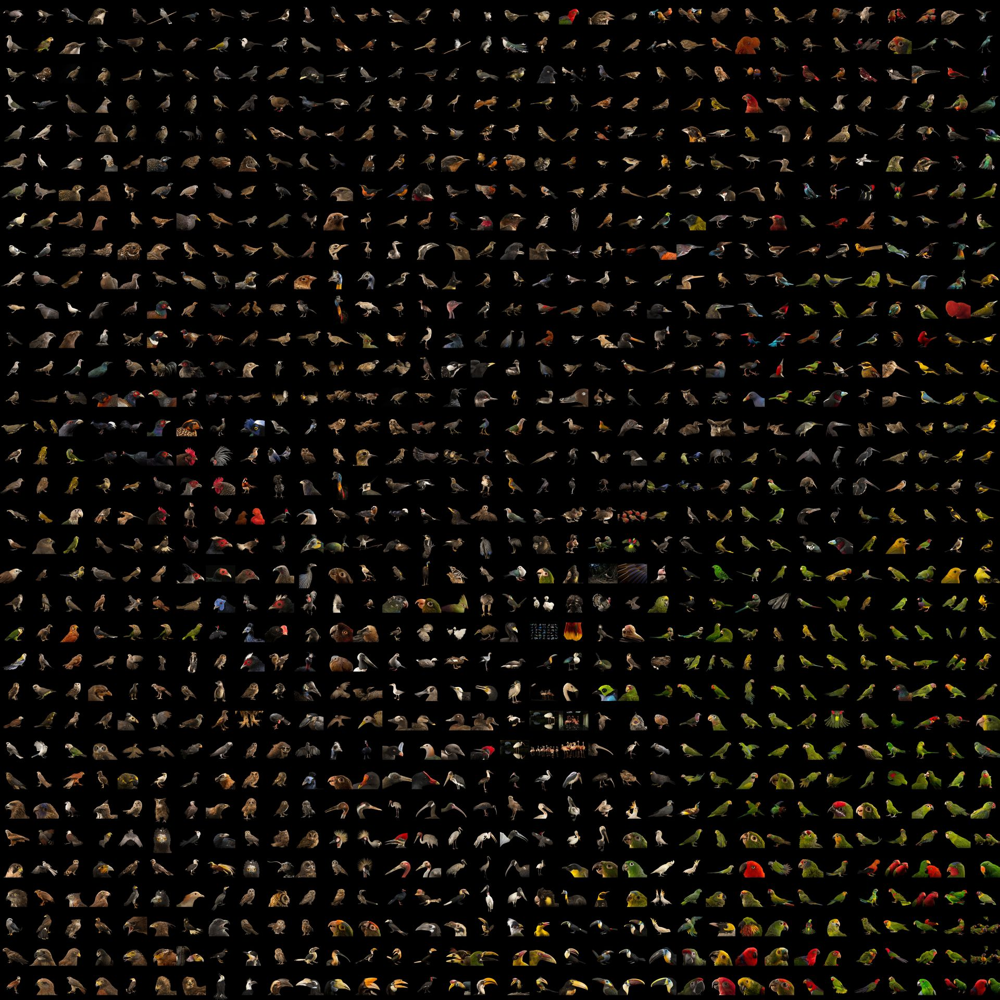

10 projects - #5
birds of a feather flock together
clustering images to display birds that are similar to one another as neighbors, and placing birds that differ further apart
the problem
I've been doing a lot more birdwatching during the coronavirus quarantine. In the last month, I've seen 33 different species according to eBird. It's impressive that in a single location, there can be so many clearly distinguishable species.
My aim for the day was to create a chart of birds ordered by visual similarity. It would be interesting to see different edges of the spectrum of bird diversity, and how the bird species smoothly morph between extremes.
methods
Proper datasets are key to this project. Because we're analyzing image data, birds in front of different backgrounds, at different scales, or even in different positions could throw off the similarity comparison. I wanted to use illustrations from Sibley's Guides to Birds but couldn't find a large collection of images online. Instead, I used ~2,500 images from Joel Sartore's Photo Ark project, and a 400 images from a database of Audubon's drawings from Bird's of America. I'm not sure about the ethics of my data collection. I needed to programmatically scrape images from both sites, is it ok to use the images here?
I first thought that I would do the clustering in image space. While this approach would be the most straightforward, it would based on the contents of the image rather than the features of the bird. For example, a bird facing to the right may be located far from a bird facing to the left as they differ strongly in image space.
To work around this problem, I needed to cluster based on features of the birds in the images rather than on the image data itself. Once again, neural networks come to the rescue. A typical classification network is composed of convolutional feature extractors followed by fully connected layers. These layers of feature extractors at the top of the network start from simple concepts like curves or edges, and build more complex composite feature detectors out of the simpler components. These features can then be used by the fully-connected half of the network to make a classification of what is in the image. To see more on this topic, read this fascinating series on Distill.pub.
I ran each image through the feature extractor from the VGG16 network to convert a 224x224x3 image into a 512x1 dimensional feature output. I then compressed the dimensionality of these vectors from 512 dimensions down to 2 using an algorithm called tSNE. From there, the scattered points are moved into a regular grid using a Jonker-Volgenant distance minimization algorithm, and the original image is ploted in its gridded location. This whole process was popularized by Andrej Karpathy and is simply implemented here. All code for the scraping and analysis can be accessed and run in this Google Colab notebook.
results
Though some of the trends in the clustering are puzzling to my human eye, the results are quite beautiful! It definitely helps to start with such strong imagery.
photo ark
{kind=link}
Dimensionality reduction of bird images from Joel Sartore's Photo Ark. Click image to view full resolution
audubon's birds of america

Dimensionality reduction of bird images from John Audubon's Bird's of America. Click image to view full resolution
conclusion
There's certainly room for improvement on the clustering. However, I think the outputs look wonderful. It's fun to trace how certain features cluster or evolve. For example, look at the red streak on the left side of the Photo Ark compilation, or how the cluster of parrots morph into other birds on the right side.
what would i do next
- I would be quite curious to use a feature extractor from a network that is made to identify birds. Most of the classes that the VGG16 network predicts are fully unrelated to nature. I would imagine that the clustering would be much more distinct if using a network with features tuned to identify the differences in birds.
- You can see that the the Audubon sketches are cropped, sometimes leaving out important regions. It would be nice to work with a more uniform drawn dataset. Again, Sibley's would be perfect. If anyone has connections to get those images, let me know.
- I'd be curious to incorporate a wide swath of animals in the photo ark. I'd like to see how different species cluster.